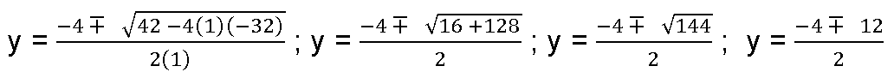

<!DOCTYPE html>
<html lang="es">
    <head>
        <meta charset="UTF-8">
        <meta name="viewport" content="width=device-width, user-scalable=no, initial-scale=1.0, maximum-scale=1.0, minimum-scale=1.0">
        <title>Funciones lineales, estadística y geometría</title>
        <meta meta name="description" content="La resolución de ecuaciones desarrolla el pensamiento algebraico del individuo, a la vez que consigue hallar el valor de una o dos variables que se desconocen. Igualmente, la geometría, permite determinar las dimensiones de todos los espacios y objetos que nos rodean y que hacen parte de nuestra vida y situaciones cotidianas.">
        <link rel="icon" type="image/svg+xml" href="assets/images/logos/senaLogo.svg">
        <link rel="stylesheet" href="assets/fonts/feather/feather.css">
        <link rel="stylesheet" href="assets/fonts/fontawesome/css/font-awesome.css">
        <link href="assets/css/fancybox.css" rel="stylesheet">
        <link href="assets/css/animate.css" rel="stylesheet">
        <link rel="stylesheet" href="assets/css/main.css">
    </head>
    <body class="theme-dark page-header-textura" id="page-home">
        <header class="curso-presentacion page-header" id="CursoPresentacion">
            <div class="page-textura">
                <div class="container">
                    <div class="curso-topbar justify-content-center justify-content-md-between"><a class="curso-topbar__logo"><svg xmlns="http://www.w3.org/2000/svg" width="168.273" height="164.177" viewBox="0 0 168.273 164.177">
                                <path id="SENA_LOGO" data-name="SENA LOGO" d="M85.349,1a18.09,18.09,0,1,0,18.09,18.09h0A18.1,18.1,0,0,0,85.349,1ZM25.617,42.983a33.722,33.722,0,0,0-9.386,1.024,11.156,11.156,0,0,0-5.12,2.56A5.346,5.346,0,0,0,10.086,52.2c.683,1.707,2.56,2.9,4.608,3.584,4.437,1.536,9.386,1.877,13.994,2.731a5.1,5.1,0,0,1,2.389,1.024,1.369,1.369,0,0,1-.683,2.048,9.146,9.146,0,0,1-5.291.683A8.354,8.354,0,0,1,20.5,61.244a1.962,1.962,0,0,1-.853-2.389H9.233A7.663,7.663,0,0,0,10.6,63.463a7.59,7.59,0,0,0,4.267,2.389A28.541,28.541,0,0,0,23.4,66.876,52.426,52.426,0,0,0,35,66.023a11.043,11.043,0,0,0,5.8-2.9,5.358,5.358,0,0,0-1.365-8.533,21.267,21.267,0,0,0-5.8-2.048c-3.072-.683-5.973-1.024-9.045-1.536a9.114,9.114,0,0,1-3.072-.853,1.226,1.226,0,0,1,0-2.219,9.369,9.369,0,0,1,4.437-.683,10.554,10.554,0,0,1,4.608.853A1.877,1.877,0,0,1,31.59,49.81h9.9a5.669,5.669,0,0,0-1.195-3.584A8.875,8.875,0,0,0,35.515,43.5c-3.584-.341-6.827-.512-9.9-.512Zm21.333.683V67.217H75.792V62.1H57.531V57.489H73.744V52.54H57.531V48.786H75.109v-5.12Zm47.615,0H81.253V67.217H91.322V51.346l13.824,15.872h13.824V43.666H108.9v15.7Zm42.495,0L120.676,67.217h10.581l2.56-4.267H150.2l2.389,4.267h11.776l-15.53-23.551ZM142.35,49.3l5.12,8.533h-10.41ZM.7,74.044l.171,12.8L49,86.673c2.389.512,3.925,2.048,3.413,5.8l-29.7,51.711,9.557,9.045L78.01,74.044Zm91.646,0L137.4,152.89l9.9-8.874L117.433,92.3c-.512-3.584.853-5.291,3.413-5.8l48.127.171V74.044ZM84.837,87.185,42.512,159.546l11.264,5.461,28.159-47.615a4.283,4.283,0,0,1,2.9-1.195,4.681,4.681,0,0,1,3.072,1.195l28.159,47.786,11.605-5.973Z" transform="translate(-0.7 -1)" fill="#FF6B00" />
                            </svg>
                        </a><a class="curso-topbar__menubar collapsed btn-menu-responsive d-none" data-toggle="collapse" href="#curso-topbar__nav" aria-expanded="false"><span></span><span></span><span></span></a>
                        <nav class="curso-topbar__nav collapse show d-none d-md-block" id="curso-topbar__nav">
                            <ul class="curso-topbar__list">
                                <li class="curso-topbar__item"><a class="curso-topbar__link" href="#ResultadosAprendizaje"><span class="text-white">Resultados de aprendizaje</span></a></li>
                                <li class="curso-topbar__item"><a class="curso-topbar__link" href="#IndiceTematico"><span class="text-white">Índice temático</span></a></li>
                                <li class="curso-topbar__item"><a class="curso-topbar__link" href="#Creditos"><span class="text-white">Créditos</span></a></li>
                            </ul>
                        </nav>
                    </div>
                    <div class="curso-portada">
                        <div class="row align-items-center">
                            <div class="col-12 col-lg-6">
                                <h3 class="curso-subtitulo" id="curso-titulo-componente">Habilidades cognitivas en matemáticas</h3>
                                <h1 class="curso-titulo" id="curso-titulo-tema">Funciones lineales, estadística y geometría</h1>
                                <div class="brand-line-primary"></div>
                                <p class="curso-descripcion">La resolución de ecuaciones desarrolla el pensamiento algebraico del individuo, a la vez que consigue hallar el valor de una o dos variables que se desconocen. Igualmente, la geometría, permite determinar las dimensiones de todos los espacios y objetos que nos rodean y que hacen parte de nuestra vida y situaciones cotidianas.</p>
                            </div>
                            <div class="col-12 col-lg-6 text-center">
                                <div class="d-none d-lg-block"></div>
                            </div>
                        </div>
                    </div>
                </div>
            </div>
        </header>
        <section class="curso-resultados section bg-base-light" id="ResultadosAprendizaje">
            <div class="container">
                <h2> Resultados de <br>aprendizaje</h2>
                <div class="brand-line-primary"></div>
                <div class="card resultado-item">
                    <div class="card-body">
                        <ul class="bg-color-dark">
                            <li> <span>20201501-03 - Verificar los resultados de los procedimientos matemáticos conforme con los requerimientos de los diferentes contextos.</span></li>
                        </ul>
                    </div>
                </div>
            </div>
        </section>
        <section class="curso-indice-tematico section" id="IndiceTematico">
            <div class="container">
                <h2>Desarrollo de <br>contenidos</h2>
                <div class="brand-line-primary"></div>
                <div class="row justify-content-center">
                    <div class="col-12 col-sm-10">
                        <div class="card wow flipInX" data-wow-delay=".4s">
                            <div class="card-body">
                                <ul class="list-group list-group-flush list my-n3 nav-temas">
                                    <li class="list-group-item nav-tema-item">
                                        <div class="row align-items-center">
                                            <div class="col-auto">
                                                <div class="avatar avatar-sm"><span class="nav-tema-item__icon avatar-title font-size-lg bg-secondary-soft rounded-circle text-primary font-weight-bold"> <i class="fa fa-play"></i></span></div>
                                            </div>
                                            <div class="col ml-n2"><span class="nav-tema-item__titulo"> <a href="main.html#page/introduccion/">Introducción</a></span></div>
                                            <div class="col-auto"> <a class="btn btn-light nav-tema-item__btn" href="main.html#page/introduccion/">Ver más</a></div>
                                        </div>
                                    </li>
                                    <li class="list-group-item nav-tema-item">
                                        <div class="row align-items-center">
                                            <div class="col-auto">
                                                <div class="avatar avatar-sm"><span class="nav-tema-item__icon avatar-title font-size-lg bg-secondary-soft rounded-circle text-primary font-weight-bold">1</span></div>
                                            </div>
                                            <div class="col ml-n2"><span class="nav-tema-item__titulo"> <a href="main.html#page/relaciones_y_funciones/">Relaciones y funciones</a></span></div>
                                            <div class="col-auto"> <a class="btn btn-light nav-tema-item__btn" href="main.html#page/relaciones_y_funciones/">Ver más</a></div>
                                        </div>
                                    </li>
                                    <li class="list-group-item nav-tema-item">
                                        <div class="row align-items-center">
                                            <div class="col-auto">
                                                <div class="avatar avatar-sm"><span class="nav-tema-item__icon avatar-title font-size-lg bg-secondary-soft rounded-circle text-primary font-weight-bold">2</span></div>
                                            </div>
                                            <div class="col ml-n2"><span class="nav-tema-item__titulo"> <a href="main.html#page/ecuaciones/">Ecuaciones</a></span></div>
                                            <div class="col-auto"> <a class="btn btn-light nav-tema-item__btn" href="main.html#page/ecuaciones/">Ver más</a></div>
                                        </div>
                                    </li>
                                    <li class="list-group-item nav-tema-item">
                                        <div class="row align-items-center">
                                            <div class="col-auto">
                                                <div class="avatar avatar-sm"><span class="nav-tema-item__icon avatar-title font-size-lg bg-secondary-soft rounded-circle text-primary font-weight-bold">3</span></div>
                                            </div>
                                            <div class="col ml-n2"><span class="nav-tema-item__titulo"> <a href="main.html#page/combinatoria/">Combinatoria</a></span></div>
                                            <div class="col-auto"> <a class="btn btn-light nav-tema-item__btn" href="main.html#page/combinatoria/">Ver más</a></div>
                                        </div>
                                    </li>
                                    <li class="list-group-item nav-tema-item">
                                        <div class="row align-items-center">
                                            <div class="col-auto">
                                                <div class="avatar avatar-sm"><span class="nav-tema-item__icon avatar-title font-size-lg bg-secondary-soft rounded-circle text-primary font-weight-bold">4</span></div>
                                            </div>
                                            <div class="col ml-n2"><span class="nav-tema-item__titulo"> <a href="main.html#page/aleatoriedad/">Aleatoriedad</a></span></div>
                                            <div class="col-auto"> <a class="btn btn-light nav-tema-item__btn" href="main.html#page/aleatoriedad/">Ver más</a></div>
                                        </div>
                                    </li>
                                    <li class="list-group-item nav-tema-item">
                                        <div class="row align-items-center">
                                            <div class="col-auto">
                                                <div class="avatar avatar-sm"><span class="nav-tema-item__icon avatar-title font-size-lg bg-secondary-soft rounded-circle text-primary font-weight-bold">5</span></div>
                                            </div>
                                            <div class="col ml-n2"><span class="nav-tema-item__titulo"> <a href="main.html#page/probabilidad_clasica/">Probabilidad clásica</a></span></div>
                                            <div class="col-auto"> <a class="btn btn-light nav-tema-item__btn" href="main.html#page/probabilidad_clasica/">Ver más</a></div>
                                        </div>
                                    </li>
                                    <li class="list-group-item nav-tema-item">
                                        <div class="row align-items-center">
                                            <div class="col-auto">
                                                <div class="avatar avatar-sm"><span class="nav-tema-item__icon avatar-title font-size-lg bg-secondary-soft rounded-circle text-primary font-weight-bold">6</span></div>
                                            </div>
                                            <div class="col ml-n2"><span class="nav-tema-item__titulo"> <a href="main.html#page/geometria_plana/">Geometría plana</a></span></div>
                                            <div class="col-auto"> <a class="btn btn-light nav-tema-item__btn" href="main.html#page/geometria_plana/">Ver más</a></div>
                                        </div>
                                    </li>
                                </ul>
                            </div>
                        </div>
                    </div>
                </div>
            </div>
        </section>
        <section id="mainContent">
            <div id="introduccion">
                <div class="container">
                    <div class="header-ecored">
                        <h1>Introducción </h1>
                    </div>
                </div>
                <div class="container">
                    <div class="row">
                        <div class="col">
                            <div class="card">
                                <div class="card-body mt-0">
                                    <p>Los conceptos matemáticos y la forma de operarlos están directamente vinculados con las actividades que realizamos en la vida cotidiana, por ejemplo, nociones como relación y función están continuamente en nuestras vidas. Por ejemplo, cuando a cada persona le corresponde un número de identificación como el registro de nacimiento, la tarjeta de identidad, la cédula o el pasaporte y también cuando se hacen proyecciones económicas o se estudian fenómenos de la naturaleza.</p><br>
                                    <p>En esta unidad estudiaremos las diferentes relaciones de correspondencia entre elementos, las funciones matemáticas que coordinan estas relaciones, y la forma de combinar estos elementos, de tal manera que no se repitan. Sumado a esto, se estudiarán los problemas cotidianos de los que desconocemos variables, para entender qué necesitamos de un sistema para hallarlas. Así mismo, analizaremos las tendencias de los datos que se basan en información histórica, que se aplican a pronósticos que están en la cotidianidad para predecir resultados en diferentes tópicos de la economía y en las ciencias.</p><br>
                                    <p>Finalmente, todos los conceptos que podemos aplicar en las situaciones rutinarias están ligados a la forma de ubicarnos y orientarnos en el espacio que nos rodea, por lo tanto, también abordaremos el entorno relacionado con los objetos y figuras geométricas.</p>
                                </div>
                            </div>
                        </div>
                    </div>
                </div>
            </div>
            <div id="tema-1">
                <div class="container">
                    <div class="header-ecored">
                        <h1>1. Relaciones y funciones</h1>
                    </div>
                    <div class="jumbotron bg-white" id="relacion">
                        <div class="sub-line mt-5">
                            <h2>1.1 Relación</h2>
                        </div>
                        <p>Es la correspondencia de un primer conjunto llamado Dominio o Partida, con un segundo conjunto llamado Recorrido, Rango o Llegada, de tal manera que a cada elemento del Dominio le corresponde un elemento del Rango. </p>
                        <p>Todas las relaciones pueden graficarse en el diagrama de Venn, en el que se representan los conjuntos y en el plano cartesiano.</p>
                        <p>Toda relación definida de A en B es cualquier subconjunto de parejas ordenadas (par ordenado) del producto cartesiano A x B</p>
                        <div class="row justify-content-center align-items-center mt-5">
                            <div class="col-12 col-md-10"></div>
                        </div>
                        <p class="mt-5">Cada uno de los siguientes subconjuntos es una relación definida de A en B:
                        <ul>
                            <li>R1 = {(2,1), (3,1)}; se puede definir como el conjunto de pares cuyo segundo elemento es 1  y se exresa como R1 = {(x, y) | y = 1} </li>
                        </ul>
                        </p>
                        <div class="row justify-content-center align-items-stretch mt-5">
                            <div class="col-12 col-md-5">
                                <p class="mt-3">Diagrama de Venn</p>
                            </div>
                            <div class="col-12 col-md-5">
                                <p class="mt-3">Plano Cartesiano </p>
                            </div>
                            <ul>
                                <li> R2 = {(2,4), (2,5), (3,4), (3,5)}; se puede definir por los pares, cuyo primer componente es menor que el segundo y se expresa como: R2 = {(x, y) | x < y}</li>
                            </ul>
                        </div>
                        <div class="row justify-content-center align-items-stretch mt-5">
                            <div class="col-12 col-md-5">
                                <p class="mt-3">Diagrama de Venn</p>
                            </div>
                            <div class="col-12 col-md-5">
                                <p class="mt-3">Plano Cartesiano </p>
                            </div>
                            <ul>
                                <li> R3 = {(2,4), (3,5)}; se puede definir por los pares que cumplen en el segundo componente mayor en dos unidades que el primero y se expresa como: R3 = {(x, y) | y = x + 2}</li>
                            </ul>
                        </div>
                        <div class="row justify-content-center align-items-stretch mt-5">
                            <div class="col-12 col-md-5">
                                <p class="mt-3">Diagrama de Venn</p>
                            </div>
                            <div class="col-12 col-md-5">
                                <p class="mt-3">Plano Cartesiano </p>
                            </div>
                        </div>
                        <div class="sub-line mt-5" id="funcion">
                            <h2>1.2 Función</h2>
                        </div>
                        <p>Según Aguilar (2015); una función es la relación que existe entre dos conjuntos, de manera que a los elementos de x les corresponde a lo más un elemento de y. </p>
                        <p>Se denota por: </p>
                        <div class="row justify-content-center align-items-center">
                            <div class="col-2 bg-p">
                                <p class="text-center mt-3">y=f(x)</p>
                            </div>
                        </div>
                        <p>Se lee, y es igual a f de x; </p>
                        <p class="mb-0">Donde: </p>
                        <p class="mb-0">x: variable independiente </p>
                        <p class="mb-0">y: variable dependiente</p>
                        <p class="mb-0">f(x): regla de correspondencia </p>
                        <div class="row justify-content-center align-items-stretch mt-5">
                            <div class="col-12 col-md-3">
                                <p class="ejemplo text-center">Constante</p>
                            </div>
                            <div class="col-12 col-md-9 vl">
                                <p>Es la función que asocia un mismo valor a cada valor de la variable independiente:</p>
                                <p>Se denota por: </p>
                                <div class="row pl-2">
                                    <div class="col-2 bg-p">
                                        <p class="text-center mt-3">y=k</p>
                                    </div>
                                </div>
                                <p>La representación gráfica es una línea recta paralela al eje X, sobre la ordenada que toma el valor de k.</p>
                            </div>
                        </div>
                        <div class="row justify-content-center align-items-center mt-5">
                            <div class="col-12 col-md-10"></div>
                        </div>
                        <div class="row justify-content-center align-items-center mt-5">
                            <div class="col-12 col-md-10"></div>
                        </div>
                        <div class="sub-line mt-5" id="lineal">
                            <h2>1.3 Función lineal</h2>
                        </div>
                        <p>Se llama función lineal a la función que tiene la siguiente estructura:</p>
                        <div class="row justify-content-center align-items-center">
                            <div class="col-2 bg-p">
                                <p class="text-center mt-3">y=mx + b</p>
                            </div>
                        </div>
                        <p class="mb-0">Donde:</p>
                        <p class="mb-0">m= es una constante que corresponde a un número real diferente de cero</p>
                        <p class="mb-0">b = distancia del punto (0,0) al punto (0, b).</p>
                        <div class="sub-line mt-5" id="graficas">
                            <h2>1.4 Análisis de gráficas </h2>
                        </div>
                        <p>Para representar la función lineal se debe tener en cuenta los valores que toma, de acuerdo con las siguientes condiciones:</p>
                        <ul>
                            <li>La gráfica es una línea recta que pasa por el origen del plano cartesiano o por el punto (0,0)</li>
                            <li>El valor de m es una constante de proporcionalidad. </li>
                            <li>Si m > 0 se dice que la función es creciente, es decir, que a medida que  aumenta el valor de x también aumenta el valor de y.</li>
                        </ul>
                        <p>Gráficamente: </p>
                        <ul class="mt-5">
                            <li>Si m < 0, la función es decreciente; es decir, que a medida que aumenta  el valor de x, disminuye el valor de y.</li>
                        </ul>
                        <p class="mt-5">A medida que aumenta el valor de x, se mantiene el mismo valor de y.</p>
                        <div class="header-arrow">
                            <h3 class="text-center">Ejemplo de función creciente </h3>
                        </div>
                        <p class="mt-5">Graficar la función f(x)=4x +3 la función es de la forma f(x) = mx + b; donde m>0</p>
                        <p>Se enfocan los elementos de línea recta, dándole valores a x:</p>
                        <p>La función es una línea recta ya que tiene exponente 1 en la x y además es creciente ya que la pendiente es mayor que cero. </p>
                        <div class="header-arrow mt-5">
                            <h3 class="text-center">Ejemplo de función decreciente </h3>
                        </div>
                        <p class="mt-5">Graficar f(x) = -2x + 1; la función es de la forma f(x) = mx + b; donde m< 0</p>
                                <p>Con respecto a la gráfica se enfocan los elementos de la función, dándole valores a x:</p>
                                <p>La función es una línea recta ya que tiene exponente 1 en la x y además es decreciente ya que la pendiente es menor que cero.</p>
                                <div class="header-arrow mt-5">
                                    <h3 class="text-center">Ejemplo de función constante </h3>
                                </div>
                                <p class="mt-5">Graficar f(x) = 3; la función es de la forma f(x) = mx + b; donde m= 0</p>
                                <p>Con respecto a la gráfica se enfoca los elementos de la función, dándole valores a x:</p>
                                <p>La función es una línea recta ya que tiene exponente 1 en la x y además es constante ya que la pendiente es igual a cero.</p>
                                <div class="sub-line mt-5" id="aplicacion">
                                    <h2>1.5 Aplicación de las funciones lineales</h2>
                                </div>
                                <p>Las funciones tienen aplicación en la vida cotidiana, veamos algunos ejemplos: </p>
                                <div class="header-arrow mt-5">
                                    <h3 class="text-center">Ejemplo 1</h3>
                                </div>
                                <p class="mt-5">Un tren de alta velocidad que conecta a varias ciudades lleva una velocidad media de 250 km/h. Hallar la distancia que recorre en función del tiempo y graficar.</p>
                                <p>Solución: </p>
                                <p>En la tabla que se observa a continuación se muestra la distancia que recorre el tren cada hora.</p>
                                <p>Obsérvese que la distancia está en función del tiempo, donde se conserva una velocidad media que equivale a una constante = 250, que en este caso es m y al expresar la función se tiene que: D(t) = 250t </p>
                                <table class="table table-bordered table-striped mt-5">
                                    <tbody>
                                        <tr>
                                            <td>t (tiempo en horas)</td>
                                            <td>1</td>
                                            <td>2</td>
                                            <td>3</td>
                                            <td>4</td>
                                            <td>5</td>
                                            <td>........ </td>
                                        </tr>
                                    </tbody>
                                    <tbody>
                                        <tr class="table2">
                                            <td>D (t) distancia recorrida en Km</td>
                                            <td>250</td>
                                            <td>500</td>
                                            <td>750</td>
                                            <td>1000</td>
                                            <td>1250</td>
                                            <td>........ </td>
                                        </tr>
                                    </tbody>
                                </table>
                                <p>Cada punto de la función es entonces: (250, 1), (500,2), (750,3), (1000,4), (1250,5), …. y así sucesivamente. Si el tiempo es cero, la distancia es cero, luego la recta pasa por el punto (0,0).</p>
                                <p>Al graficar tenemos: </p>
                                <p>La función es creciente, puesto que a medida que aumenta el tiempo (t), aumenta la distancia (D) recorrida por el tren. </p>
                                <div class="header-arrow mt-5">
                                    <h3 class="text-center">Ejemplo 2</h3>
                                </div>
                                <p class="mt-5">En un experimento se midió la temperatura de cierto líquido que aumenta gradualmente cada minuto. Representar los datos de la tabla gráficamente y determinar la función que representa.</p>
                                <table class="table table-bordered table-striped">
                                    <tbody>
                                        <tr>
                                            <td>tiempo en minutos (x)</td>
                                            <td>1</td>
                                            <td>2</td>
                                            <td>3</td>
                                            <td>4</td>
                                            <td>5</td>
                                            <td>........ </td>
                                        </tr>
                                    </tbody>
                                    <tbody>
                                        <tr class="table2">
                                            <td>Temperatura en °C (y)</td>
                                            <td>10</td>
                                            <td>20</td>
                                            <td>30</td>
                                            <td>40</td>
                                            <td>50</td>
                                            <td>........ </td>
                                        </tr>
                                    </tbody>
                                </table>
                                <p>Solución: </p>
                                <p>Al graficar los puntos que representan la relación dada, es decir, el tiempo que transcurre y la temperatura del líquido se obtiene una línea recta que no pasa por el punto (0,0). </p>
                                <p>La gráfica pasa por el punto (0, b), luego la estructura de la función que representa es de la forma </p>
                                <div class="row justify-content-center align-items-center">
                                    <div class="col-2 bg-p">
                                        <p class="text-center mt-3">Y = mx + b; donde b = 10</p>
                                    </div>
                                </div>
                                <p class="mt-5">La constante de proporcionalidad es 10, puesto que los valores de la temperatura del líquido aumentan como se muestra a continuación:</p>
                                <p class="mb-0 ml-3">10 x 1 = 10</p>
                                <p class="mb-0 ml-3">10 x 2 = 20</p>
                                <p class="mb-0 ml-3">10 x 3 = 30</p>
                                <p class="mb-0 ml-3">10 x 4 = 40 </p>
                                <p class="mb-3 ml-3">10 x 5 = 50</p>
                                <p>El número 10 es la constante de proporcionalidad, la T° del líquido aumenta en función del tiempo, luego la función se puede expresar como: Y = 10x + 10.</p>
                                <p>La función es creciente, puesto que a medida que aumenta x, aumenta y o a medida que aumenta el tiempo, aumenta la t° del líquido. </p>
                                <div class="header-arrow mt-5">
                                    <h3 class="text-center">Ejemplo 3</h3>
                                </div>
                                <p class="mt-5"><b>GamerX Ltda.</b>, produce controles remoto de alta calidad para videojuegos. La empresa publicó un anuncio publicitario en una página de videojuegos. El costo del anuncio es de $400.000, la producción de cada control es de $100.000 y la empresa cobra $140.000 por control. Grafique las funciones de costo e ingreso sobre el mismo plano cartesiano e interprete la gráfica.</p>
                                <p>Para este problema se deben graficar dos funciones, veamos:</p>
                                <div class="list">
                                    <div class="list__item">
                                        <div class="list__item__bulletNumber"><span>1</span></div>
                                    </div>
                                    <div class="list__txt">
                                        <p>Se construye la función teniendo en cuenta el costo fijo, que en este caso es el costo de la publicidad $400.000 y el costo variable de producción del control que es de $100.000, entonces la función C de costos se puede expresar como una función de x, el número de controles producidos.</p>
                                        <h3 class="text-center">C(x)=100.000x+400.000</h3>
                                    </div>
                                </div>
                                <div class="list">
                                    <div class="list__item">
                                        <div class="list__item__bulletNumber"><span>2</span></div>
                                    </div>
                                    <div class="list__txt">
                                        <p>Cada control se vende en $140.000, entonces el ingreso R se puede expresar como una función de x, el número de controles vendidos,</p>
                                        <h3 class="text-center">R(x)=140.000x</h3>
                                        <ul>
                                            <li>Al graficar cada función obtenemos</li>
                                        </ul>
                                    </div>
                                </div>
                                <div class="list">
                                    <div class="list__item">
                                        <div class="list__item__bulletNumber"><span>3</span></div>
                                    </div>
                                    <div class="list__txt">
                                        <p>Para este caso los valores negativos de x no se tienen en cuenta en las dos funciones, ya que no tiene sentido hablar de unidades negativas fabricadas y vendidas, por lo tanto, la menor cantidad de unidades producidas y vendidas será cero. </p>
                                    </div>
                                </div>
                                <div class="list">
                                    <div class="list__item">
                                        <div class="list__item__bulletNumber"><span>4</span></div>
                                    </div>
                                    <div class="list__txt">
                                        <p>Una vez construida cada función se resalta la pendiente y el punto de corte con el eje “y”. </p>
                                    </div>
                                </div>
                                <div class="list">
                                    <div class="list__item">
                                        <div class="list__item__bulletNumber"><span>5</span></div>
                                    </div>
                                    <div class="list__txt">
                                        <p>También el significado del punto de corte de las dos funciones con el eje “y” será el valor inicial que tomen las funciones, es decir cuando x es igual a cero el costo fijo se paga produzca o no controles. </p>
                                    </div>
                                </div>
                                <div class="list">
                                    <div class="list__item">
                                        <div class="list__item__bulletNumber"><span>6</span></div>
                                    </div>
                                    <div class="list__txt">
                                        <p>El punto de equilibrio es el punto de corte de las dos funciones, es decir en el punto (10, 1’400.000), en este punto la empresa no obtiene ganancias, ni perdidas. La parte de las funciones debajo de ese punto son pérdidas y la parte de arriba corresponde a la ganancia. </p>
                                    </div>
                                </div>
                                <p class="mt-5">En el siguiente video se puede apreciar la construcción de la gráfica con sus respectivas funciones para la solución del problema planteado</p>
                                <div class="embed-responsive embed-responsive-16by9"><iframe class="embed-responsive-item" width="560" height="315" src="https://www.youtube.com/embed/0HsZYxICQN4" frameborder="0" allow="accelerometer; autoplay; encrypted-media; gyroscope; picture-in-picture" allowfullscreen=""> </iframe></div>
                    </div>
                    <div class="container contenedor"> 
                        <p class="center">Puedes practicar sobre las funciones lineales con problemas cotidianos de Aguilar (2015), Capítulo 7. Función lineal: pp. 391, enlace: <a href="http://www.ebooks7-24.com.bdigital.sena.edu.co/?il=4829&amp;pg=417" target="_blank">http://www.ebooks7-24.com.bdigital.sena.edu.co/?il=4829&pg=417 </a></p>
                    </div>
                </div>
            </div>
            <div id="tema-2">
                <div class="container">
                    <div class="header-ecored">
                        <h1>2. Ecuaciones</h1>
                    </div>
                    <div class="jumbotron bg-white">
                        <p>desconocidos o incógnitas. Estos datos están relacionados mediante operaciones matemáticas.</p>
                        <div class="sub-line mt-5" id="ecuaciones_lineales">
                            <h2>2.1 Ecuaciones lineales</h2>
                        </div>
                        <p>De acuerdo con lo anterior la ecuación lineal es una igualdad matemática que tiene la siguiente estructura: </p>
                        <div class="row justify-content-center align-items-center my-5">
                            <div class="col-2 bg-p2">
                                <p class="text-center mt-3">Ax + By + C = 0 </p>
                            </div>
                        </div>
                        <p>donde A, B y C son constantes reales tales que A y B no son cero. </p>
                        <p>Ejemplo:</p>
                        <ul>
                            <li>3x − 4y − 4 = 0, es una ecuación lineal con: A = 3, B = −4 y C = −4</li>
                            <li>Dada la ecuación 3x = 5y − 7, también se puede escribir de la forma: 3x − 5y + 7 = 0 y es una ecuación lineal con: A = 3, B = -5, C = 7 </li>
                        </ul>
                        <div class="sub-title-line mt-5">
                            <h3>Solución de una ecuación lineal</h3>
                        </div>
                        <p>Una ecuación lineal tiene como conjunto solución todos los pares ordenados (x, y), que satisfacen la ecuación, donde x e y son números reales.</p>
                        <p>Ejemplo:Basado en Aguilar (2015)</p>
                        <ul>
                            <li>Verificar si el par ordenado (1, -4) es solución de la ecuación: 2x -3y -14 = 0</li>
                        </ul>
                        <p>Solución</p>
                        <ul>
                            <li>Lo que se debe hacer es sustituir los valores de (x, y) = (1,-4) en la ecuación y se debe cumplir la igualdad: </li>
                        </ul>
                        <p>Lo anterior quiere decir que el par (1, -4) si es solución de la ecuación 2x -3y -14 = 0, por que se cumple la igualdad.</p>
                        <div class="sub-title-line mt-5">
                            <h3>Gráfica de una ecuación lineal </h3>
                        </div>
                        <p>Para elaborar la gráfica de una ecuación lineal se requieren dos puntos para trazar la línea en el plano cartesiano.</p>
                        <p>Ejemplo: Basado en Aguilar (2015): </p>
                        <ul>
                            <li>Trazar la gráfica para la ecuación lineal 2x -3y +7 = 0, entonces se deben conocer dos puntos de la recta, por lo que se toman dos puntos arbitrarios para x y se despeja y. </li>
                        </ul>
                        <p>Entonces sustituimos en la ecuación x = -2 para conocer y: </p>
                        <p>entonces el primer punto es (-2, 1), ahora sustituimos en la ecuación x = 1 para conocer y</p>
                        <p>entonces el primer punto es (1, 3), la gráfica de la ecuación sustituyendo estos dos puntos:</p>
                        <p>(-2, 1), (1, 3) es la que se observa a continuación: </p>
                        <div class="container contenedor">
                            <p class="centrado"><b>Consulta el recurso externo para ampliar el conocimiento</b><br></br> Puedes practicar con problemas cotidianos de Aguilar (2015), Capítulo 7. FUNCION LINEAL: pp. 397, enlace: <br></br><a href="http://www.ebooks7-24.com.bdigital.sena.edu.co/?il=4829&amp;pg=423" target="_blank">http://www.ebooks7-24.com.bdigital.sena.edu.co/?il=4829&pg=423</a></p>
                        </div>
                        <div class="sub-line mt-5" id="ecuaciones_lineales_primer_grado">
                            <h2>2.2 Ecuaciones lineales de primer grado </h2>
                        </div>
                        <p>Una ecuación de primer grado es una igualdad que involucra una o más variables elevadas a la primera potencia y con la cual se realizan operaciones de suma y resta:</p>
                        <div class="row">
                            <div class="col-2 bg-p">
                                <p class="text-center my-3">ax + b = 0, a ≠ 0 </p>
                            </div>
                        </div>
                        <p> En la anterior expresión x es la variable de la ecuación, elevada a la potencia 1. A las expresiones que quedan a lado y lado de la igualdad se les denomina términos.</p>
                        <p>Los valores de las variables o incógnitas que hacen que se cumpla la igualdad se llaman soluciones de la ecuación.</p>
                        <p>Las ecuaciones de primer grado pueden tener más de una variable o incógnita y en tal caso se expresa como:</p>
                        <div class="row">
                            <div class="col-2 bg-p">
                                <p class="text-center my-3">Y = ax + b; a≠0</p>
                            </div>
                        </div>
                        <p>La gráfica de esta ecuación es una línea recta, por ello se le llama ecuación lineal y se realiza sobre un plano cartesiano, proporcionando valores a la variable x, para determinar los valores que toma la variable y, luego con dichos valores se construye la recta. </p>
                        <p>Ejemplo: </p>
                        <p>La variable o incógnita es x y es una ecuación, es de primer grado porque x esta elevada a la potencia 1. </p>
                        <p>Si x = 3, vamos a comprobar que este valor es una solución de la ecuación, entonces, sustituimos la x por 3: </p>
                        <div class="row justify-content-center align-items-center my-5">
                            <div class="col-10"></div>
                        </div>
                        <p>Obsérvese que se cumple la igualdad, luego x = 3 es una solución de la ecuación. </p>
                        <p>Ejemplo: realizar la gráfica de la ecuación y = 3x + 2</p>
                        <p>Proporcionamos valores arbitrarios a la variable x, que estén cercanos a cero para encontrar más fácilmente los extremos de la recta, entonces podemos escoger los valores de (-2,0,1) y obtenemos:</p>
                        <ul>
                            <li>y = 3 (-2) +2; y = -6+2; y = -4</li>
                            <li>y = 3 (0) +2; y = 0+2; y = 2</li>
                            <li>y = 3 (1) +2; y = 3+2; y = 5</li>
                        </ul>
                        <p>Entonces:</p>
                        <div class="row justify-content-center align-items-center">
                            <div class="col-8">
                                <table class="table table-bordered table-striped text-center">
                                    <tbody>
                                        <tr class="table1">
                                            <td>X</td>
                                            <td>Y </td>
                                        </tr>
                                    </tbody>
                                    <tbody>
                                        <tr class="table3">
                                            <td>2</td>
                                            <td>-4 </td>
                                        </tr>
                                    </tbody>
                                    <tbody>
                                        <tr class="table3">
                                            <td>0</td>
                                            <td>2</td>
                                        </tr>
                                    </tbody>
                                    <tbody>
                                        <tr class="table3">
                                            <td>1</td>
                                            <td>5 </td>
                                        </tr>
                                    </tbody>
                                </table>
                            </div>
                        </div>
                        <div class="row justify-content-center align-items-center">
                            <div class="col-10"></div>
                        </div>
                        <p class="mt-5 mb-0">Obsérvese que con los valores que toma la variable x, se obtienen valores para y por consiguiente se puede dibujar la gráfica. </p>
                        <div class="sub-line mt-5" id="aplicacion_ecuaciones_lineales_primer_grado">
                            <h2>2.3 Aplicación de las ecuaciones lineales de primer grado</h2>
                        </div>
                        <p>Las ecuaciones de primer grado se aplican en la vida real en diferentes situaciones, veamos algunas de ellas en los siguientes ejemplos. </p><strong>Ejemplo:</strong>
                        <p>Un tren tiene 32 asientos disponibles en primera clase y 50 asientos en clase económica, si se venden todos, el valor recaudado sería de US$14600. Se han vendido 10 asientos en primera clase y 40 en clase económica obteniendo un total recaudado de US$7000. Determinar cuánto vale comprar un asiento en cada clase. </p>
                        <div class="row justify-content-center align-items-stretch mt-5">
                            <div class="col-12 col-md-5 mr-1 bg-color2 px-5 py-5">
                                <h3 class="mb-5">Datos iniciales</h3>
                                <p>Número de asientos primera clase = 32</p>
                                <p>Número de asientos clase económica = 50</p>
                                <p>Valor total recaudado si se venden todos los asientos = US$14600</p>
                                <p>Asientos vendidos de primera clase = 10</p>
                                <p>Asientos vendidos de primera clase = 40</p>
                                <p>Valor total recaudado de los asientos </p>
                                <p>vendidos = US$7000 </p>
                            </div>
                            <div class="col-12 col-md-5 bg-color2 px-5 py-5">
                                <h3 class="mb-5">Variables de la ecuación</h3>
                                <p>x = valor de un asiento en primera clase.</p>
                                <p>y = valor de un asiento clase económica. </p>
                            </div>
                        </div>
                        <p class="mt-3">Solución: </p>
                        <p class="mb-0">Si se vendieran todos los asientos de la primera clase, el valor recaudado seria = 32x</p>
                        <p>Si se vendieran todos los asientos de la clase económica, el valor recaudado seria = 50y</p>
                        <p>Se plantea la ecuación para el valor total recaudado si se vendieran todos los asientos: </p>
                        <p>Se plantea la ecuación para el valor total recaudado de los asientos vendidos de primera clase y de la clase económica:</p>
                        <p>Luego las ecuaciones que se deben resolver para hallar el valor de cada asiento son:</p>
                        <p>De cada ecuación se despeja la variable x, luego se igualan, entonces de la primera ecuación al despejar x, obtenemos:</p>
                        <p>De la segunda ecuación al despejar x, obtenemos:</p>
                        <p>Ahora se igualan las dos ecuaciones para despejar y, se obtiene:</p>
                        <p>Resolviendo la ecuación se despeja utilizando las reglas algebraicas; es decir 32 que está a un lado de la igualdad pasa a multiplicar al otro lado: </p>
                        <p>lo anterior quiere decir que el valor de cada asiento de clase económica es de US$100; ahora debemos reemplazar el valor de y en cualquiera de las ecuaciones que tiene despejada la x, entonces:</p>
                        <p>lo anterior quiere decir que el valor de cada asiento de primera clase es de US$300 </p>
                        <div class="sub-line mt-5" id="ecuaciones_segundo_grado">
                            <h2>2.4 Ecuaciones de segundo grado </h2>
                        </div>
                        <p class="mb-0">Una ecuación de segundo grado es una igualdad que involucra una o más variables elevadas a la segunda potencia y con la cual se realizan operaciones de suma y resta:</p>
                        <p>En la anterior expresión x es la variable de la ecuación, elevada a la potencia 2. </p>
                        <p>A las expresiones que quedan a lado y lado de la igualdad se les denomina términos. Los valores de las variables o incógnitas que hacen que se cumpla la igualdad se llaman soluciones de la ecuación.</p>
                        <p class="mb-0">Al igual que en las ecuaciones de primer grado las de segundo grado pueden tener más de una variable o incógnita y en tal caso se expresa como: </p>
                        <p class="mb-0">Para resolver una ecuación cuadrática, esta se debe igualar a cero y se tiene: </p>
                        <p class="mb-0">a, b y c son constantes y se aplica la fórmula:</p>
                        <p class="mb-0">La parte que se encuentra dentro del radical (b2 – 4ac) se llama determinante y brinda información acerca de la solución de la ecuación, es decir si:</p>
                        <p>La gráfica de esta ecuación es una parábola, y se realiza sobre un plano cartesiano, proporcionando valores a la variable x, para determinar los valores que toma la variable y, luego con dichos valores se hace la construcción. </p>
                        <div class="row justify-content-center align-items-center mt-5">
                            <div class="col-8">
                                <ul>
                                    <li>Y = (-3)2 + 2(-3) +1; y = 9 -6 + 1; y = 4</li>
                                    <li>Y = (-2)2 + 2(-2) +1; y = 4 -4 + 1; y = 1</li>
                                    <li>Y = (-1)2 + 2(-1) +1; y = 1 -2 + 1; y = 0</li>
                                    <li>Y = (0)2 + 2(0) +1; y = 0 + 0 + 1; y = 1</li>
                                    <li>Y = (1)2 + 2(1) +1; y = 1 +2 + 1; y = 4 </li>
                                </ul>
                            </div>
                        </div>
                        <div class="row justify-content-center align-items-center">
                            <div class="col-8">
                                <table class="table table-bordered table-striped text-center">
                                    <tbody>
                                        <tr class="table1">
                                            <td>X</td>
                                            <td>Y </td>
                                        </tr>
                                    </tbody>
                                    <tbody>
                                        <tr class="table3">
                                            <td>-3</td>
                                            <td>4 </td>
                                        </tr>
                                    </tbody>
                                    <tbody>
                                        <tr class="table3">
                                            <td>-2</td>
                                            <td>1</td>
                                        </tr>
                                    </tbody>
                                    <tbody>
                                        <tr class="table3">
                                            <td>-1</td>
                                            <td>0 </td>
                                        </tr>
                                    </tbody>
                                    <tbody>
                                        <tr class="table3">
                                            <td>0</td>
                                            <td>1</td>
                                        </tr>
                                    </tbody>
                                    <tbody>
                                        <tr class="table3">
                                            <td>1</td>
                                            <td>4 </td>
                                        </tr>
                                    </tbody>
                                </table>
                            </div>
                        </div>
                        <p class="mt-3">Obsérvese que con los valores que toma la variable x, se obtienen valores para y por consiguiente se puede dibujar la gráfica. </p>
                        <p>Para ver la solución de la ecuación cuadrática x<sup>2</sup> + 2x + 1 = 0, observe que:</p>
                        <h3>a = 1, b = 2, c = 1, entonces:</h3>
                        <div class="sub-line mt-5" id="aplicacion_de_las_ecuaciones_de_segundo_grado">
                            <h2>2.5 Aplicación de las ecuaciones de segundo grado</h2>
                        </div>
                        <div class="row justify-content-center align-items-stretch mt-5">
                            <div class="col-12 col-md-5 mr-1 bg-color2 px-5 py-5">
                                <h3 class="mb-5">Datos iniciales</h3>
                                <p>Valor de las peras compradas = US$600</p>
                                <p>Peras que le hubieran dado de más al siguiente día = 75</p>
                                <p>Valor más barato de cada pera = US$4</p>
                            </div>
                            <div class="col-12 col-md-5 bg-color2 px-5 py-5">
                                <h3 class="mb-5">Variables de la ecuación</h3>
                                <p>X = número de peras compradas </p>
                                <p>Y = precio de cada pera</p>
                            </div>
                        </div>
                        <h3 class="mt-3">Solucion: </h3>
                        <p>La primera ecuación que se puede plantear con la cantidad inicial de peras es: </p>
                        <p>La segunda ecuación se puede plantear con la cantidad de peras que hubiera comprado al siguiente día con el nuevo precio: hubiera comprado 75 peras más a 4 dólares menos cada una.</p>
                        <p>Sustituyendo el valor de x en la segunda ecuación se tiene que: </p>
                        <p>Resolviendo los fraccionarios: </p>
                        <p>Los denominadores pasan a multiplicar los términos que se encuentran a ambos lados de la igualdad, así:</p>
                        <p>Organizando la ecuación:</p>
                        <p>Simplificando por 75:</p>
                        <p>Aplicando la fórmula: </p>
                        <p>se tiene que: a = 1, b = 4, c= -32</p>
                        <p>hay dos soluciones:</p>
                        <p><b>y1</b>, no es una solución válida puesto que da un valor negativo, luego la solución correcta es <b>y2</b>, entonces reemplazamos este valor en la primera ecuación:</p>
                        <p>Entonces Juan compró 150 peras a US$4 cada una. </p>
                        <div class="header-arrow mt-5">
                            <h3 class="text-center">Aplicación de la fórmula general en ecuación cuadrática</h3>
                        </div>
                        <p class="mt-5">Tengo un rectángulo de cartón de 60cm de largo por 80cm de alto. Deseo construir una caja, cuya área de la base sea 100〖cm〗^2. Según las instrucciones se debe cortar en cuadrados iguales las cuatro esquinas y luego plegar los lados, como se muestra en la figura.</p>
                        <p>¿La longitud del lado del cuadrado que debo recortar de cada esquina es?</p>
                    </div>
                </div>
            </div>
            <div id="tema-3">
                <div class="container">
                    <div class="header-ecored">
                        <h1>3. Combinatoria</h1>
                    </div>
                    <div class="jumbotron bg-white">
                        <p>Se llama combinatoria a todas las posibles agrupaciones que pueden hacerse con m elementos de un conjunto. Existen tipos de combinatorias como, permutación y combinación, veamos en que consiste cada uno.</p>
                        <div class="sub-line mt-5" id="permutaciones">
                            <h2>3.1 Permutaciones </h2>
                        </div>
                        <p>La permutación es la variación del orden de los elementos de un conjunto. Se destaca la palabra orden porque es necesario que los elementos tengan diferente posición. </p>
                        <p>La permutación permite conocer el número de maneras en las que los elementos del conjunto pueden ordenarse.</p>
                        <p>Entonces hacer un ordenamiento de r elementos de un conjunto que contiene n elementos distintos recibe el nombre de una permutación r de n elementos y se expresa como: </p>
                        <p>Para calcular el número de ordenaciones o permutaciones que se pueden hacer de r elementos de un conjunto n de elementos sin repetir combinaciones, se utiliza la fórmula:</p>
                        <p>donde n! = n x (n-1) x (n-2) x (n -.) x 1, y cero (0)! = 1</p>
                        <p>por ejemplo 5! = 5x4x3x2x1 = 120</p>
                        <h3>Ejemplo 1: </h3>
                        <p>Sea el conjunto A = {a, b, c}, hallar las posibles combinaciones o permutaciones de los tres elementos, sin repetir combinaciones</p>
                        <p>n = 3</p>
                        <p>r = 3</p>
                        <p>Entonces se pueden hacer 6 combinaciones con diferente orden en sus elementos, como se muestra a continuación:</p>
                        <p class="text-center">(a, b, c), (a, c, b), (b, a, c), (b, c, a), (c, a, b), (c, b, a)</p>
                        <h3>Ejemplo 2: </h3>
                        <p>De cuantas maneras diferentes podemos combinar los números 3,4,5. </p>
                        <p>Lo que se pide calcular es P (3 ,3) y al igual que en el ejemplo anterior se obtienen 6 permutaciones:</p>
                        <p class="text-center">(3, 4, 5), (3, 5, 4), (4, 3, 5), (4, 5, 3), (5, 3, 4), (5, 4, 3)</p>
                        <div class="sub-title-line mt-5">
                            <h3>Permutación sin repetición: </h3>
                        </div>
                        <p>Los elementos de la combinación no se pueden repetir, luego se calcula utilizando la fórmula enunciada anteriormente. </p>
                        <div class="sub-title-line mt-5">
                            <h3>Permutación sin repetición: </h3>
                        </div>
                        <p>Cuando se permite la repetición de r elementos contenidos en un conjunto n, para calcular el número de ordenaciones o permutaciones que se pueden hacer de r elementos, se utiliza la fórmula: </p>
                        <h3>Ejemplo: </h3>
                        <p>Cuántas permutaciones con repeticiones de los elementos se pueden hacer del conjunto </p>
                        <p>A = {3,4,5}</p>
                        <p class="mb-0">n = 3 elementos </p>
                        <p class="mb-0">r = 3 es decir se seleccionan los tres para las permutaciones </p>
                        <p>nr = 33. </p>
                        <p>Para combinar los números 3, 4 y 5 haciendo repeticiones de los tres números; se pueden hacer 33 permutaciones es decir 27. Por ejemplo, algunas de ellas podrían ser:</p>
                        <div class="row justify-content-center align-items-center">
                            <div class="col-8">
                                <table class="table table-bordered table-striped text-center">
                                    <tbody>
                                        <tr class="table3">
                                            <td>333</td>
                                            <td>334</td>
                                            <td>335</td>
                                            <td>343</td>
                                            <td>353</td>
                                        </tr>
                                    </tbody>
                                    <tbody>
                                        <tr class="table3">
                                            <td>444</td>
                                            <td>443</td>
                                            <td>445</td>
                                            <td>454</td>
                                            <td>434 </td>
                                        </tr>
                                    </tbody>
                                    <tbody>
                                        <tr class="table3">
                                            <td>555</td>
                                            <td>553</td>
                                            <td>554</td>
                                            <td>535</td>
                                            <td>545</td>
                                        </tr>
                                    </tbody>
                                </table>
                            </div>
                        </div>
                        <p class="mt-5">Las anteriores combinaciones pueden corresponder a las combinaciones de una clave o caja fuerte. </p>
                        <h3>Recuerda que … </h3>
                        <p>En las permutaciones el orden de los elementos si importa, para conseguir combinaciones diferentes.</p>
                        <div class="sub-line mt-5" id="aplicacion_de_las_permutaciones">
                            <h2>3.2 Aplicación de las permutaciones</h2>
                        </div>
                        <p>En una empresa se van a seleccionar tres cargos profesionales y se presentaron 12 personas en igualdad de condiciones académicas. El primer, segundo y tercer lugar en su orden ocuparán los cargos de jefe, coordinador y supervisor. Determinar de cuantas maneras posibles se puede hacer la selección.</p>
                        <p>Datos iniciales</p>
                        <p class="mb-0">n = 12; número de personas que se presentaron para ocupar los cargos.</p>
                        <p>r = 3; personas que se deben seleccionar de las 12 para ocupar 1°,2°,3° cargo.</p>
                        <p>Solución</p>
                        <p>Las combinaciones que se puede hacer deben ser diferentes, luego es una permutación sin repetición, ya que las personas a ocupar los cargos deben ser 3 personas diferentes. </p>
                        <p>Luego se aplica: </p>
                        <p>Entonces: </p>
                        <p>Luego hay 1320 formas de hacer la selección de los tres cargos. </p>
                        <div class="sub-line mt-5" id="combinaciones">
                            <h2>3.3 Combinaciones</h2>
                        </div>
                        <p>Una combinación es una selección no ordenada de r elementos de un conjunto que contiene n elementos distintos. </p>
                        <p>Se llama combinación r de n elementos y se denota por medio de:</p>
                        <p>Una permutación de objetos implica ordenamiento, pero una combinación no toma en cuenta el orden. </p>
                        <div class="sub-line mt-5" id="aplicacion_de_las_combinaciones">
                            <h2>3.4 Aplicación de las combinaciones </h2>
                        </div>
                        <p>Se sortean dos computadoras iguales entre 10 personas. ¿De cuantas formas se puede escoger a los ganadores? </p>
                        <p>Datos iniciales:</p>
                        <p class="mb-0">n = 10 personas (elementos totales del conjunto de elementos).</p>
                        <p>r = 2, número de computadoras a sortear, luego se deben formar grupos de dos en dos que corresponden a los grupos ganadores posibles.</p>
                        <p>Las dos computadoras son iguales, y no importa el orden en que las personas salgan ganadoras, lo que importa es que salgan dos ganadores, es por ellos que es una combinación. </p>
                        <p>Entonces: </p>
                        <p>Luego hay 45 formas de escoger los ganadores. </p>
                    </div>
                </div>
            </div>
            <div id="tema-4">
                <div class="container">
                    <div class="header-ecored">
                        <h1>4. Aleatoriedad</h1>
                    </div>
                    <div class="jumbotron bg-white">
                        <p>La aleatoriedad es el estudio de los fenómenos que dependen de la suerte o del azar, es decir, que son aleatorios y que están compuestos de eventos cuyos resultados no pueden predecirse hasta que ocurran. </p>
                        <p>La aleatoriedad está dentro del ámbito de la estadística y utiliza los datos para realizar proyecciones y calcular tendencias de eventos o sucesos que están sujetos a la probabilidad, ya que estos no se pueden predecir. </p>
                        <p>En esta sección vamos a estudiar la forma de organizar los datos para obtener conclusiones válidas de los eventos impredecibles.</p>
                        <h3>Datos agrupados </h3>
                        <p>Cuando los datos son cuantitativos (cuando se pueden medir para calcular algo) y se presenta una cantidad grande de valores diferentes se recomienda acomodarlos en grupos para obtener información de cada uno de ellos. A estos grupos se les llama clases o intervalos de clase. </p>
                        <p>Los grupos deben formarse de igual tamaño (tamaño de clase, c) y el total de grupos o clases no deben ser menor que 5 ni mayor que 15.</p>
                        <p>Una forma de calcular el tamaño de los grupos es utilizando: </p>
                        <p>Clases =√n;</p>
                        <p>donde n es el número de datos a ser agrupados.</p>
                        <h3>Ejemplo: </h3>
                        <p>Se tienen 40 alumnos en un curso del colegio y se deben agrupar por estaturas. Determinar cuántos grupos se pueden formar y establecer las estaturas.</p>
                        <p>Solución</p>
                        <p>N° de grupos (clase) =√40; n° de grupos (clase) = 6,3</p>
                        <p>Se toma la parte entera del resultado sin el decimal; es decir se deben formar 6 grupos que se pueden distribuir así:</p>
                        <p>Para distribuir los grupos se toma la estatura de cada alumno y se agrupan de acuerdo con estas mediciones, contando los alumnos que hay en cada clase o grupo de estatura:</p>
                        <div class="row justify-content-center align-items-center">
                            <div class="col-8">
                                <table class="table table-bordered table-striped text-center">
                                    <tbody>
                                        <tr class="table1">
                                            <td>Grupo (clases)</td>
                                            <td>Estatura</td>
                                            <td>Frecuencia</td>
                                        </tr>
                                    </tbody>
                                    <tbody>
                                        <tr class="table3">
                                            <td>1</td>
                                            <td>150-152</td>
                                            <td>6</td>
                                        </tr>
                                    </tbody>
                                    <tbody>
                                        <tr class="table3">
                                            <td>2</td>
                                            <td>153-155</td>
                                            <td>8</td>
                                        </tr>
                                    </tbody>
                                    <tbody>
                                        <tr class="table3">
                                            <td>3</td>
                                            <td>156-158</td>
                                            <td>8</td>
                                        </tr>
                                    </tbody>
                                    <tbody>
                                        <tr class="table3">
                                            <td>4</td>
                                            <td>159-161</td>
                                            <td>5</td>
                                        </tr>
                                    </tbody>
                                    <tbody>
                                        <tr class="table3">
                                            <td>5</td>
                                            <td>162-164</td>
                                            <td>6</td>
                                        </tr>
                                    </tbody>
                                    <tbody>
                                        <tr class="table3">
                                            <td>6</td>
                                            <td>165-167</td>
                                            <td>7 </td>
                                        </tr>
                                    </tbody>
                                    <tbody>
                                        <tr class="table3">
                                            <td colspan="2"> Total alumnos</td>
                                            <td>40</td>
                                        </tr>
                                    </tbody>
                                </table>
                            </div>
                        </div>
                        <p>Obsérvese que en cada clase o grupo hay un determinado número de alumnos que se ha llamado Frecuencia, columna que al sumarse debe dar como resultado el número total de alumnos de la clase.</p>
                        <p>La Frecuencia entonces mide las veces que se repite un evento dentro de una clase o grupo.</p>
                        <div class="sub-line mt-5" id="medidas_de_tendencia_central">
                            <h2>4.1 Medidas de tendencia central </h2>
                        </div>
                        <p>Una de las características de la distribución o agrupación de los datos es su tendencia a acumularse hacia el centro de distribución o agrupación. Dicha característica se denomina tendencia central.</p>
                        <p>Existen varias medidas que ayudan a identificar esta característica: </p>
                        <p class="mb-0">a) Media aritmética (x), el valor medio. </p>
                        <p class="mb-0">b) Mediana, el valor central. </p>
                        <p class="mb-0">c) Moda, el valor más frecuente.</p>
                        <p class="mb-0">d) Desviación media</p>
                        <p>Veamos en que consiste cada una de ellas </p>
                        <div class="sub-title-line mt-5">
                            <h3>Media aritmética </h3>
                        </div>
                        <p>Es el valor que se obtiene al sumar todos los datos y dividir el resultado entre la cantidad de datos. Se expresa como x̄ o P (promedio)</p>
                        <h3>Ejemplo: </h3>
                        <p>Juan obtuvo al final del periodo las siguientes calificaciones en 5 materias diferentes: 8,5; 7,0; 9,6; 6,5; 7,8. Determinar cuál es su promedio del periodo.</p>
                        <h3 class="mt-3">Solución:</h3>
                        <p>Lo que nos piden es hallar el promedio o media aritmética de las calificaciones de Juan, entonces: </p>
                        <p>El promedio de Juan al final del periodo es 7,8. </p>
                        <div class="sub-title-line mt-5">
                            <h3>Mediana</h3>
                        </div>
                        <p>Es aquel valor que divide al conjunto de datos en dos partes iguales. Se expresa como Md. </p>
                        <p>De acuerdo con Ibáñez (2018), para definir la mediana, se deben seguir los siguientes pasos:</p>
                        <p>a) Lo primero que se requiere es ordenar los datos en forma ascendente o descendente, cualquiera de los dos criterios conduce al mismo resultado.</p>
                        <p>b) Si el número de datos es impar, la mediana es el valor que se encuentra en medio en la posición: </p>
                        <p>c) Cuando el número de datos es par, existen dos valores medios y en tal caso la mediana es el promedio de estos dos valores:</p>
                        <p>Veamos los siguientes ejemplos basados en Ibáñez (2108):</p>
                        <h3>Ejemplo 1: </h3>
                        <p>Calcula la mediana de los siguientes datos: 5, 4, 3, 5, 6, 7, 1, 2, 9, 8, 6. </p>
                        <h3 class="mt-3">Solución:</h3>
                        <p>Primero deben ordenarse los datos: 1, 2, 3, 4, 5, 5, 6, 6, 7, 8, 9 </p>
                        <p>Tenemos 11 datos, como el número de datos es impar, la mediana es el valor que se encuentra en medio X<sub>n / 2</sub>; </p>
                        <p>Luego 11/2 = 5,5, esto quiere decir que se cuentan 5 números y el que le sigue es la media: </p>
                        <p class="text-center">1, 2, 3, 4, 5, <b>5</b>, 6, 6, 7, 8, 9</p>
                        <p>Entonces se elige el que se encuentra a la mitad, en este caso es 5. </p>
                        <h3>Ejemplo 2: </h3>
                        <p>Calcula la mediana de los siguientes datos: 4, 8, 6, 7, 9, 10, 4, 5. </p>
                        <h3 class="mt-3">Solución:</h3>
                        <p>Primero deben ordenarse los datos:</p>
                        <p class="text-center">4, 4, 5, <b>6, 7</b>, 8, 9, 10</p>
                        <p>Tenemos 8 datos, como es una cantidad de datos par, el número de datos se toma del promedio de los dos que se encuentran al centro:</p>
                        <p>Entonces el valor de la mediana es 6,5.</p>
                        <div class="sub-title-line mt-5">
                            <h3>Moda</h3>
                        </div>
                        <p>Es la medida que se relaciona con el dato que se presenta con mayor frecuencia en un grupo o conjunto de datos. </p>
                        <p>Puede existir más de una moda en un conjunto de datos y esta se expresa como Mo: </p>
                        <ul>
                            <li>Cuando un conjunto de datos tiene una sola moda se dice que este es unimodal.</li>
                            <li>Cuando el conjunto de datos tiene dos modas se dice que este es bimodal.</li>
                            <li>Cuando el conjunto de datos contiene más de dos datos repetidos, el que tenga mayor número de veces de repetición es la moda y se dice que el conjunto de datos es multimodal.</li>
                            <li>Cuando todos los datos de un conjunto de datos tienen la misma frecuencia, (incluyendo una frecuencia igual a 1) se dice que el conjunto de datos es amodal.</li>
                        </ul>
                        <p>Veamos los siguientes ejemplos basados en Ibáñez (2018):</p>
                        <h3>Ejemplo 1: </h3>
                        <p>Determina la moda del siguiente conjunto de datos: 1, 3, 4, 6, 7, 2, 4, 8, 9, 1, 5, 4.</p>
                        <h3 class="mt-3">Solución:</h3>
                        <p>La moda de este conjunto de datos es igual a 4, puesto que este dato se repite 3 veces y como es el único dato que se repite se considera unimodal.</p>
                        <h3>Ejemplo 2: </h3>
                        <Determina>la moda del siguiente conjunto de datos: 1, 2, 3, 4, 4, 5, 2, 1, 3, 4, 2, 3, 4, 6, 3. </Determina>
                        <h3 class="mt-3">Solución:</h3>
                        <p>Las modas de este conjunto de datos son 3 y 4 ya que ambas tienen la mayor frecuencia o se repiten 4 veces cada una, por lo tanto, el conjunto de datos es bimodal. </p>
                        <h3>Ejemplo 3: </h3>
                        <Determina>la moda del siguiente conjunto de datos: 1, 2, 3, 4, 5, 6, 7, 8, 9.</Determina>
                        <h3 class="mt-3">Solución: </h3>
                        <El>conjunto de datos no contiene ningún dato repetido, por lo tanto, se considera que el conjunto de datos es amodal.</El>
                        <div class="sub-title-line mt-5">
                            <h3>Desviación Media </h3>
                        </div>
                        <p>Llamada también desviación promedio de la media aritmética.</p>
                        <p>La desviación media de un conjunto de datos es la medida de lo que se desvía cada dato del conjunto respecto de la media aritmética y se expresa como D.M.</p>
                        <p>Antes de calcular la desviación media de un conjunto de datos, se debe calcular entonces la media aritmética de los datos.</p>
                        <p>La fórmula de la desviación media es:</p>
                        <p>Entiéndase por valor absoluto de un dato, al valor del dato con signo positivo o de valor cero. </p>
                        <h3>Ejemplo: </h3>
                        <p>Calcular la desviación media de los siguientes datos: 2,4,6,8</p>
                        <h3 class="mt-3">Solución:</h3>
                        <p>Se calcula la media aritmética del conjunto de los datos, sabiendo que tiene 4 elementos, es decir n = 4</p>
                        <p>Por tanto, los datos del conjunto se desvían con una medida de 2, respecto de la media aritmética. </p>
                        <hr class="hr-orange">
                        <p>Consulta el recurso externo para ampliar el conocimiento </p>
                        <div class="row justify-content-center align-items-center">
                            <div class="col-12 col-md-5">
                                <section class="my-4"><a class="media-link" href="https://www.youtube.com/watch?v=jiceVfALmV0" target="_blank"> 
                                        <div class="media-link-title">
                                            <p><strong>Anexo</strong>. Para profundizar acerca de Medidas de tendencia central </p>
                                        </div>
                                    </a></section>
                            </div>
                            <div class="col-12 col-md-5">
                                <section class="my-4"><a class="media-link" href="https://www.youtube.com/watch?v=YBEKojF4E94" target="_blank"> 
                                        <div class="media-link-title">
                                            <p><strong>Anexo</strong>. Para profundizar acerca de Medidas de tendencia central </p>
                                        </div>
                                    </a></section>
                            </div>
                        </div>
                        <hr class="hr-orange">
                    </div>
                    <div class="container contenedor"> 
                        <p class="center">Te invitamos a consultar otros problemas de práctica en con Ibáñez, P. (2018). Matemáticas I. pág. 114, en el siguiente enlace: <a href="http://www.ebooks7-24.com.bdigital.sena.edu.co/?il=8213&amp;pg=127" target="_blank">http://www.ebooks7-24.com.bdigital.sena.edu.co/?il=8213&pg=127 </a></p>
                    </div>
                </div>
            </div>
            <div id="tema-5">
                <div class="container">
                    <div class="header-ecored">
                        <h1>5. Probabilidad clásica</h1>
                    </div>
                    <div class="jumbotron bg-white">
                        <p>Se define como probabilidad a la posibilidad de que ocurra un determinado evento o suceso.</p>
                        <p>Es necesario recorrer algunos conceptos para aplicar las probabilidades al contexto real. Veamos:</p>
                        <p><b>Experimento aleatorio</b>: es la reproducción de un fenómeno cuyo resultado depende del azar. </p>
                        <h3>Ejemplo:</h3>
                        <ul>
                            <li>El lanzamiento de un dado.</li>
                            <li>El lanzamiento de una moneda.</li>
                        </ul>
                        <p><b>Evento o suceso</b>: conjunto de uno o más resultados del experimento aleatorio. </p>
                        <h3>Ejemplo: </h3>
                        <p>si A = {obtener el número 4 al lanzar un dado}, entonces el evento es A = {4} </p>
                        <p>si B = {obtener un número mayor que 3, al lanzar un dado}, el evento es B = {4,5,6}</p>
                        <p><b>Espacio muestral</b>: es el conjunto de todos los resultados posibles de un experimento aleatorio.</p>
                        <h3>Ejemplo: </h3>
                        <ul>
                            <li>Si se lanza un dado el espacio muestral está compuesto por los siguientes elementos: S = {1,2,3,4,5,6}</li>
                            <li>Si se lanza una moneda el espacio muestral está compuesto por los siguientes elementos: S = {cara, sello}</li>
                        </ul>
                        <p>La <b>probabilidad</b>, como se indicó anteriormente es la posibilidad de que ocurra un evento A. Dado el evento A, la probabilidad de que A ocurra, se denota como P(A) y se calcula mediante la fórmula:</p>
                        <p>Criterios claves:</p>
                        <ul>
                            <li>La probabilidad de A; P(A) es un valor entre 0 y 1, es decir 0 ≤ P (A)≤1.</li>
                            <li>La probabilidad de que ocurra un evento imposible es cero. Por ejemplo, la probabilidad de obtener el número 7 al lanzar un dado, numerado del 1 al 6 es cero, es decir P(X) = 0.</li>
                            <li>La probabilidad de que ocurra un evento seguro es 1. Por ejemplo, la probabilidad de obtener un número < 7 al lanzar un dado, numerado del 1 al 6 es 1, es decir P(X)=1.</li>
                        </ul>
                        <h3 class="mt-3">Ejemplo:</h3>
                        <p>Se lanza un dado n veces, cual es la probabilidad de que no salga el número 2 en los n lanzamientos.</p>
                        <h3 class="mt-3">Solución:</h3>
                        <p>Lo primero que hacemos es hallar el número de resultados posibles y eso es:</p>
                        <p>Cada vez que se lanza el dado hay 6 resultados posibles: </p>
                        <p class="ml-4">1° lanzamiento = 6</p>
                        <p class="ml-4">2° lanzamiento = 6</p>
                        <p class="ml-4">3° lanzamiento = 6</p>
                        <p class="ml-4">4° lanzamiento = 6</p>
                        <p>n° lanzamiento = 6, luego el número de resultados posibles es 6<sup>n</sup>.</p>
                        <p>El paso siguiente es calcular los casos favorables al evento, es decir aquellos en que al lanzar los dados “n” veces no salga el número 2. </p>
                        <p class="ml-4">1° lanzamiento = 5</p>
                        <p class="ml-4">2° lanzamiento = 5</p>
                        <p class="ml-4">3° lanzamiento = 5</p>
                        <p class="ml-4">4° lanzamiento = 5</p>
                        <p>n° lanzamiento = 5, en los lanzamientos se debe eliminar la posibilidad del número 2, por ello se coloca el 5 que equivale a los casos favorables. Luego el número de resultados favorables es 5<sup>n</sup>.</p>
                        <p>Ahora reemplazamos en la fórmula: P (no salga 2) = 5<sup>n</sup> / 6<sup>n</sup> o P (no salga 2) = (5/6) <sup>n</sup></p>
                        <div class="sub-line mt-5" id="regla_de_la_adicion_en_probabilidades">
                            <h2>5.1 Regla de la adición en probabilidades</h2>
                        </div>
                        <p>Dos eventos son excluyentes si no pueden suceder simultáneamente, por ejemplo, el resultado de lanzar una moneda en el que puede salir cara o sello es un evento excluyente. </p>
                        <p>Si dos eventos A y B son mutuamente excluyentes, la regla especial de la adición establece que la probabilidad de que ocurra uno u otro es igual a la suma de sus probabilidades. </p>
                        <p>Si los eventos no son mutuamente excluyentes, la probabilidad de que ocurra uno u otro es igual a la suma de sus probabilidades menos la probabilidad de que sucedan al mismo tiempo.</p>
                        <p><b>Ejemplo:</b> Basado en Ibáñez (2018):</p>
                        <p>Un colegio seleccionó una muestra de 200 estudiantes que visitaron un museo o un teatro durante el año. Las encuestas revelaron que 120 estudiantes fueron a un museo, 100 a un teatro y 60 a ambos. ¿Cuál es la probabilidad de que un estudiante haya ido a un museo o al teatro?</p>
                        <h3 class="mt-3">Solución:</h3>
                        <p><b>A =</b> estudiantes que fueron al museo</p>
                        <p><b>B =</b> estudiantes que fueron al teatro</p>
                        <p>Hallamos la probabilidad de cada uno:</p>
                        <p>Si se suman las dos probabilidades el resultado es 1,1 y de acuerdo con los criterios claves dados, la probabilidad de un evento debe ser ≤1. La explicación es que hay estudiantes que fueron al museo y al teatro, por tanto, hay que excluir a estos:</p>
                        <p>Hallamos la probabilidad de los que fueron al mueso y al teatro:</p>
                        <p>Entonces: </p>
                        <p class="pl-5">P (A o B) = P(A) + P(B) – P (A y B)</p>
                        <p class="pl-5">P (A o B) = 0,6 + 0,5 – 0,3</p>
                        <p class="pl-5">P (A o B) = 0,8</p>
                        <div class="sub-line mt-5" id="regla_de_la_multiplicacion_en_probabilidades">
                            <h2>5.2 Regla de la multiplicación en probabilidades</h2>
                        </div>
                        <p>Aquí se considera la probabilidad de que dos eventos ocurran simultáneamente, es decir, ocurre uno y otro.</p>
                        <p>Dos eventos A y B son independientes, cuando el hecho de que ocurra uno no altera la probabilidad de que ocurra el otro. </p>
                        <p>Dos eventos A y B son dependientes, si la ocurrencia de uno de ellos no afecta la ocurrencia del otro y la probabilidad de que ocurran es:</p>
                        <h3>Ejemplo: </h3>
                        <p>En un aula de clase la probabilidad que un estudiante seleccionado al azar sea bilingüe es de 0,2, mientras que la probabilidad de que el estudiante sea deportista es 0,8. Cuál es la probabilidad de que ocurran los dos eventos.</p>
                        <p><b>Evento A:</b> el estudiante sea bilingüe P(A) = 0,2</p>
                        <p><b>Evento B:</b> el estudiante sea deportista P(B) = 0,8</p>
                        <p>Los dos eventos anteriores son independientes, luego multiplicamos para hallar la probabilidad de ambos:</p>
                        <p class="ml-5">P (A y B) = P(A)*P(B)</p>
                        <p class="ml-5">P (A y B) = (0,2) *(0,8)</p>
                        <p class="ml-5">P (A y B) = 0,16</p>
                        <p>Dos eventos A y B son dependientes, si la ocurrencia de uno de ellos afecta la ocurrencia del otro y la probabilidad de que ocurran es:</p>
                        <p>La P(B|A) se lee la probabilidad de B dado que ha ocurrido A. </p>
                        <h3>Ejemplo:</h3>
                        <p>Una caja tiene 2 balones azules y 3 rojos. Si se sacan dos balones al azar sin reposición, determinar la probabilidad que ambos sean azules.</p>
                        <p>Dado que los balones se extraerán de la misma caja y no se devolverán, entonces se trata de eventos dependientes:</p>
                        <p><b>Evento A:</b> extraer un balón azul en la primera extracción</p>
                        <p><b>Evento B:</b> extraer un balón azul en la segunda extracción</p>
                        <hr class="hr-orange">
                        <p>comprende mejor como realizar operaciones con probabilidades aplicadas a un problema</p>
                        <section><a class="media-link" href="https://www.youtube.com/watch?v=MJxbMAko6rU" target="_blank"> 
                                <div class="media-link-title ml-4">
                                    <p><strong>Anexo</strong>. Para profundizar acerca de Aplicación de las probabilidades </p>
                                </div>
                            </a></section>
                        <hr class="hr-orange">
                    </div>
                    <div class="container contenedor"> 
                        <p class="center">Para practicar los temas aprendidos, resuelve los problemas de la página 130 – 135 de Ibáñez (2018), siguiendo el enlace: <a href="http://www.ebooks7-24.com.bdigital.sena.edu.co/?il=8213&amp;pg=144" target="_blank">http://www.ebooks7-24.com.bdigital.sena.edu.co/?il=8213&pg=144 </a></p>
                    </div>
                </div>
            </div>
            <div id="tema-6">
                <div class="container">
                    <div class="header-ecored">
                        <h1>6. Geometría plana</h1>
                    </div>
                    <div class="jumbotron bg-white">
                        <div class="embed-responsive embed-responsive-16by9"><iframe class="embed-responsive-item" width="560" height="315" src="https://www.youtube.com/embed/Gj3HHse-2v0" frameborder="0" allow="accelerometer; autoplay; encrypted-media; gyroscope; picture-in-picture" allowfullscreen=""></iframe></div>
                        <div class="sub-line mt-5" id="area_de_las_figuras_planas">
                            <h2>6.1 Área de las figuras planas</h2>
                        </div>
                        <div class="embed-responsive embed-responsive-16by9"><iframe class="embed-responsive-item" width="560" height="315" src="https://www.youtube.com/embed/Ba-XFayG6Tk" frameborder="0" allow="accelerometer; autoplay; encrypted-media; gyroscope; picture-in-picture" allowfullscreen=""></iframe></div>
                        <div class="sub-line mt-5" id="teorema_de_pitagoras">
                            <h2>6.2 Teorema de Pitágoras</h2>
                        </div>
                        <div class="embed-responsive embed-responsive-16by9"><iframe class="embed-responsive-item" width="560" height="315" src="https://www.youtube.com/embed/O74kxrZSjc0" frameborder="0" allow="accelerometer; autoplay; encrypted-media; gyroscope; picture-in-picture" allowfullscreen=""></iframe></div>
                        <div class="sub-line mt-5" id="teorema_de_thales">
                            <h2>6.3 Teorema de Thales</h2>
                        </div>
                        <div class="embed-responsive embed-responsive-16by9"><iframe class="embed-responsive-item" width="560" height="315" src="https://www.youtube.com/embed/LiQQbYFOxUE" frameborder="0" allow="accelerometer; autoplay; encrypted-media; gyroscope; picture-in-picture" allowfullscreen=""></iframe></div>
                        <div class="header-arrow mt-5">
                            <h3 class="text-center">Fórmulas para calcular áreas de figuras planas</h3>
                        </div>
                        <p class="mt-5">A continuación, se relacionan las fórmulas para calcular el área de las figuras geométricas planas:</p>
                        <div class="sub-line mt-5" id="aplicacion_del_area_de_las_figuras_geometricas">
                            <h2>6.4 Aplicación del área de las figuras geométricas</h2>
                        </div>
                        <div class="embed-responsive embed-responsive-16by9"><iframe class="embed-responsive-item" width="560" height="315" src="https://www.youtube.com/embed/5Ikz-cW4VSU" frameborder="0" allow="accelerometer; autoplay; encrypted-media; gyroscope; picture-in-picture" allowfullscreen=""></iframe></div>
                        <div class="sub-line mt-5" id="perimetro_de_las_figuras_planas">
                            <h2>6.5 Perímetro de las figuras planas</h2>
                        </div>
                        <div class="embed-responsive embed-responsive-16by9"><iframe class="embed-responsive-item" width="560" height="315" src="https://www.youtube.com/embed/R9Vjy8a_9rw" frameborder="0" allow="accelerometer; autoplay; encrypted-media; gyroscope; picture-in-picture" allowfullscreen=""></iframe></div>
                        <div class="header-arrow mt-5">
                            <h3 class="text-center">Fórmulas para calcular el perímetro de figuras planas </h3>
                        </div>
                        <p class="mt-5">A continuación, se relacionan las fórmulas para calcular el perímetro de figuras geométricas:</p>
                        <div class="sub-line mt-5" id="aplicacion_perimetro_de_las_figuras_planas">
                            <h2>6.6 Aplicación del perímetro de figuras planas</h2>
                        </div>
                        <div class="embed-responsive embed-responsive-16by9"><iframe class="embed-responsive-item" width="560" height="315" src="https://www.youtube.com/embed/nF4MyiGctDU" frameborder="0" allow="accelerometer; autoplay; encrypted-media; gyroscope; picture-in-picture" allowfullscreen=""></iframe></div>
                        <div class="sub-line mt-5" id="rotacion_de_figuras_en_un_plano">
                            <h2>6.7 Rotación de figuras en un plano</h2>
                        </div>
                        <div class="embed-responsive embed-responsive-16by9"><iframe class="embed-responsive-item" width="560" height="315" src="https://www.youtube.com/embed/qk0lc318Hfs" frameborder="0" allow="accelerometer; autoplay; encrypted-media; gyroscope; picture-in-picture" allowfullscreen=""></iframe></div>
                        <div class="sub-line mt-5" id="aplicacion_rotacion_de_figuras_en_un_plano">
                            <h2>6.8 Aplicación de rotación de figuras en un plano</h2>
                        </div>
                        <div class="embed-responsive embed-responsive-16by9"><iframe class="embed-responsive-item" width="560" height="315" src="https://www.youtube.com/embed/kipKVmNhq1E" frameborder="0" allow="accelerometer; autoplay; encrypted-media; gyroscope; picture-in-picture" allowfullscreen=""></iframe></div>
                        <div class="sub-line mt-5" id="traslacion_de_figuras_en_un_plano">
                            <h2>6.9 Traslación de figuras en un plano</h2>
                        </div>
                        <div class="embed-responsive embed-responsive-16by9"><iframe class="embed-responsive-item" width="560" height="315" src="https://www.youtube.com/embed/NrcMa0qfnEs" frameborder="0" allow="accelerometer; autoplay; encrypted-media; gyroscope; picture-in-picture" allowfullscreen=""> </iframe></div>
                        <div class="sub-line mt-5" id="aplicacion_traslacion_de_figuras_en_un_plano">
                            <h2>6.10 Aplicación de traslación de las figuras en un plano</h2>
                        </div>
                        <div class="embed-responsive embed-responsive-16by9"><iframe class="embed-responsive-item" width="560" height="315" src="https://www.youtube.com/embed/Yty6EWUIvJY" frameborder="0" allow="accelerometer; autoplay; encrypted-media; gyroscope; picture-in-picture" allowfullscreen=""> </iframe></div>
                        <div class="sub-line mt-5" id="volumen">
                            <h2>6.11 Volumen</h2>
                        </div>
                        <p>El volumen es una magnitud derivada de la longitud que mide el largo x ancho x alto de un objeto en cualquier espacio:</p>
                        <p>En el sistema métrico decimal las unidades más utilizadas para medir el volumen se relacionan a continuación:</p>
                        <div class="row justify-content-center align-items-center mt-5">
                            <div class="col-5 text-center">
                                <table>
                                    <tbody>
                                        <tr>
                                            <td class="table2">1m<sup>3</sup></td>
                                            <td class="table2">1.000 decímetros cúbicos</td>
                                            <td class="table2">10<sup>3</sup> dm<sup>3</sup></td>
                                        </tr>
                                        <tr>
                                            <td class="table2">1m<sup>3</sup></td>
                                            <td class="table2">1.000.000 centímetros cúbicos</td>
                                            <td class="table2">10<sup>6</sup> dm<sup>3</sup></td>
                                        </tr>
                                        <tr>
                                            <td class="table2">1m<sup>3</sup></td>
                                            <td class="table2">1.000.000.000 milímetros cúbicos</td>
                                            <td class="table2">10<sup>9</sup> dm<sup>3</sup></td>
                                        </tr>
                                        <tr>
                                            <td class="table2">1km<sup>3</sup></td>
                                            <td class="table2">1.000.000.000 metros cúbicos</td>
                                            <td class="table2">10<sup>9</sup> dm<sup>3</sup></td>
                                        </tr>
                                        <tr>
                                            <td class="table2">1hm<sup>3</sup></td>
                                            <td class="table2">1.000.000 metros cúbicos</td>
                                            <td class="table2">10<sup>6</sup> m<sup>3</sup></td>
                                        </tr>
                                        <tr>
                                            <td class="table2">1dm<sup>3</sup></td>
                                            <td class="table2">1000 metros cúbicos</td>
                                            <td class="table2">10<sup>3</sup> m<sup>3</sup></td>
                                        </tr>
                                    </tbody>
                                </table>
                            </div>
                        </div>
                        <div class="row justify-content-center align-items-center mt-5">
                            <div class="col-10"> </div>
                        </div>
                        <p>Las anteriores figuras corresponden a una esfera, un cubo y un cilindro con sus respectivas medidas para el cálculo del volumen.</p>
                        <div class="sub-line mt-5" id="aplicacion_volumen">
                            <h2>6.12 Aplicación de volumen</h2>
                        </div>
                        <div class="embed-responsive embed-responsive-16by9"><iframe class="embed-responsive-item" width="560" height="315" src="https://www.youtube.com/embed/clIcigxzsfg" frameborder="0" allow="accelerometer; autoplay; encrypted-media; gyroscope; picture-in-picture" allowfullscreen=""></iframe></div>
                    </div>
                </div>
            </div>
            <div id="glosario">
                <div class="container">
                    <div class="header-ecored">
                        <h1>Glosario</h1>
                    </div>
                    <div class="jumbotron bg-white">
                        <p><strong class="mr-2">Aleatoriedad::</strong>es el estudio de los fenómenos aleatorios o de azar que está compuesto de eventos cuyos resultados no pueden predecirse hasta que ocurran. </p>
                        <p><strong class="mr-2">Área:</strong>es una medida que especifica el tamaño de una extensión o superficie determinada.</p>
                        <p> <strong class="mr-2">Combinatoria:</strong>son todas las posibles agrupaciones que pueden hacerse con m elementos de un conjunto.</p>
                        <p><strong class="mr-2">Combinación:</strong>es una selección no ordenada de r elementos de un conjunto que contiene n elementos distintos.</p>
                        <p> <strong class="mr-2">Desviación media:</strong>es la medida de lo que se desvía cada dato del conjunto respecto de la media aritmética.</p>
                        <p> <strong class="mr-2">Ecuación:</strong>es una igualdad matemática entre dos expresiones que están separadas por el signo igual, en las que aparecen datos conocidos (números, coeficientes o constantes) y datos desconocidos o incógnitas.</p>
                        <p> <strong class="mr-2">Función:</strong>es la relación que existe entre dos conjuntos, de manera que a los elementos de x les corresponde a lo más un elemento de y.</p>
                        <p> <strong class="mr-2">Media aritmética:</strong>es el valor que se obtiene al sumar todos los datos y dividir el resultado entre la cantidad de datos.</p>
                        <p> <strong class="mr-2">Mediana:</strong>es aquel valor que divide al conjunto de datos en dos partes iguales.</p>
                        <p> <strong class="mr-2">Moda:</strong>es la medida que se relaciona con el dato que se presenta con mayor frecuencia en un grupo o conjunto de datos. </p>
                        <p> <strong class="mr-2">Permutación:</strong>es la variación del orden de los elementos de un conjunto.</p>
                        <p> <strong class="mr-2">Perímetro:</strong>es la longitud total del contorno de una figura.</p>
                        <p> <strong class="mr-2">Probabilidad:</strong>es la posibilidad de que ocurra un determinado evento o suceso.</p>
                        <p> <strong class="mr-2">Relación:</strong>es la correspondencia de un primer conjunto llamado Dominio o Partida, con un segundo conjunto llamado Recorrido, Rango o Llegada. </p>
                        <p> <strong class="mr-2">Rotación:</strong>es hacer un giro alrededor de un punto fijo dentro del plano cartesiano. </p>
                        <p> <strong class="mr-2">Traslación:</strong>es un movimiento directo dentro del plano cartesiano sin cambiar de orientación, manteniendo su forma y tamaño y realizando un desplazamiento en cualquier dirección.</p>
                        <p> <strong class="mr-2">Volumen:</strong>es una magnitud derivada de la longitud que mide el largo x ancho x alto de un objeto en cualquier espacio. </p>
                    </div>
                </div>
            </div>
            <div id="anexos">
                <div class="container">
                    <div class="header-ecored">
                        <h1>Material complementario</h1>
                    </div>
                    <div class="jumbotron bg-white">
                        <table class="table table-bordered table-striped">
                            <thead class="thead-dark">
                                <tr>
                                    <th class="text-center">Nombre del documento o material.</th>
                                    <th class="text-center">Tipo de material. </th>
                                    <th class="text-center">Enlace del Recurso.</th>
                                </tr>
                            </thead>
                            <tbody>
                                <tr>
                                    <td><strong>Matemóvil.com (2018, 29 de agosto). </strong></td>
                                    <td>Media, Mediana y Moda. [video]. YouTube.</td>
                                    <td> <a href="https://www.youtube.com/watch?v=jiceVfALmV0" target="_blank"><span class="fa fa-external-link mr-3" aria-hidden="true"></span>Ver video</a></td>
                                </tr>
                                <tr>
                                    <td><strong>Matemáticas profe Alex.com (2017, 12 de junio)</strong></td>
                                    <td>Desviación media. [video]. YouTube.</td>
                                    <td> <a href="https://www.youtube.com/watch?v=YBEKojF4E94" target="_blank"><span class="fa fa-external-link mr-3" aria-hidden="true"></span>Ver video</a></td>
                                </tr>
                                <tr>
                                    <td><strong>Matemóvil.com (2019, 14 de julio)</strong></td>
                                    <td>Teorema de Probabilidad Total. [video]. YouTube.</td>
                                    <td> <a href="https://www.youtube.com/watch?v=MJxbMAko6rU" target="_blank"><span class="fa fa-external-link mr-3" aria-hidden="true"></span>Ver video</a></td>
                                </tr>
                                <tr>
                                    <td><strong>Yo estudio.com (2013, 5 de agosto)</strong></td>
                                    <td>Matemática – Ejercicio de rotación. [video]. YouTube.</td>
                                    <td> <a href="https://www.youtube.com/watch?v=-rwW9GKBMEg&amp;feature=youtu.be" target="_blank"><span class="fa fa-external-link mr-3" aria-hidden="true"></span>Ver video </a></td>
                                </tr>
                                <tr>
                                    <td><strong>Matemáticas profe Alex.com (2016, 6 de noviembre)</strong></td>
                                    <td>Traslación en el plano cartesiano. [video]. YouTube.</td>
                                    <td> <a href="https://www.youtube.com/watch?v=C3Ydl25rESg&amp;feature=youtu.be" target="_blank"><span class="fa fa-external-link mr-3" aria-hidden="true"></span>Ver video </a></td>
                                </tr>
                            </tbody>
                        </table>
                    </div>
                </div>
            </div>
            <div id="referencias">
                <div class="container">
                    <div class="header-ecored">
                        <h1>Referencias bibliográficas</h1>
                    </div>
                    <div class="jumbotron bg-white referencias">
                        <p>Aguilar, A. (2015). Matemáticas simplificadas. (4a. ed.). Pearson Educación. <a class="ml-2" href="http://www.ebooks7-24.com.bdigital.sena.edu.co/?il=4829" target="_blank">http://www.ebooks7-24.com.bdigital.sena.edu.co/?il=4829</a></p>
                        <hr>
                        <p>Ibáñez, P. (2018). Matemáticas I. Cengage. <a class="ml-2" href="http://www.ebooks7-24.com.bdigital.sena.edu.co/?il=8213" target="_blank">http://www.ebooks7-24.com.bdigital.sena.edu.co/?il=8213</a></p>
                        <hr>
                        <p>Constitución Política de Colombia. (1991). (Capítulo 2: De la Función pública Art. 122, 123, 125,130) República de Colombia.<a class="ml-2" href=" " target="_blank"> </a></p>
                        <hr>
                        <p>Veerarajan, T. (2008). Matemáticas discretas. McGraw-Hill Interamericana.<a class="ml-2" href="http://www.ebooks7-24.com.bdigital.sena.edu.co/?il=3116" target="_blank">http://www.ebooks7-24.com.bdigital.sena.edu.co/?il=3116</a></p>
                        <hr>
                    </div>
                </div>
            </div>
        </section>
        <footer class="footer" id="Creditos">
            <div class="container">
                <h1>Créditos </h1>
                <div class="brand-line-primary"></div>
                <div class="row">
                    <div class="col-12 col-md-5">
                        <h3 class="footer-subtitulo mb-4">ECOSISTEMA DE RECURSOS EDUCATIVOS DIGITALES </h3>
                        <p class="footer-texto mb-2"><strong>Ingry Dayanna Bonilla Monzón</strong><br /> <span class="text-small">Líder del equipo</span></p>
                    </div>
                </div>
                <div class="row mt-5">
                    <div class="col-12 col-md-5">
                        <h4 class="footer-subtitulo-2 mt-0">
                            <div class="fa fa-caret-right mr-2"></div>Contenido Instruccional
                        </h4>
                        <p class="footer-texto mb-2"><strong>Gloria Matilde Lee Mejía </strong><br /> <span class="text-small">Responsable del equipo</span></p>
                        <p class="footer-texto"><span class="text-small text-uppercase">Centro de Comercio y Servicios</span><br><span class="text-small">Regional Tolima</span></p>
                        <p class="footer-texto mb-2"><strong>Rafael Nelftalí Lizcano Reyes</strong><br /> <span class="text-small">Asesor pedagógico<br /></span></p>
                        <p class="footer-texto"><span class="text-small text-uppercase">Centro industrial del diseño y la manufactura </span><br><span class="text-small">Regional Santander</span></p>
                        <p class="footer-texto mb-2"><strong>Olga Lucía Mogollón Carvajal</strong><br /><span class="text-small">Experta temática<br /></span></p>
                        <p class="footer-texto mb-2"><strong>Oscar Andrés Fernández Urrego</strong><br /><span class="text-small">Evaluador instruccional<br /></span></p>
                        <p class="footer-texto mb-2"><strong>Adriana Lozano Zapata</strong><br /><span class="text-small">Revisora de estilo<br /></span></p>
                        <p class="footer-texto"><span class="text-small text-uppercase">Centro para la Industria de la Comunicación Gráfica - CENIGRAF</span><br><span class="text-small">Regional Distrito Capital</span></p>
                        <p class="footer-texto mb-2"><strong>Vilma Lucía Perilla Méndez</strong><br /><span class="text-small">Diseñadora Instruccional<br /></span></p>
                        <p class="footer-texto"><span class="text-small text-uppercase">Centro de Gestión Industrial</span><br><span class="text-small">Regional Distrito Capital</span></p>
                    </div>
                    <div class="col-12 col-md-5">
                        <h4 class="footer-subtitulo-2 mt-0">
                            <div class="fa fa-caret-right mr-2"></div>Diseño y desarrollo de recursos educativos digitales
                        </h4>
                        <p class="footer-texto mb-2"><strong>Francisco José Lizcano Reyes </strong><br /> <span class="text-small">Responsable del equipo<br /></span></p>
                        <p class="footer-texto mb-2"><strong>Leyson Fabian Castaño Perez</strong><br /> <span class="text-small">Integración de recursos y pruebas<br /></span></p>
                        <p class="footer-texto mb-2"> <strong>Ernesto Navarro Jaimes</strong><br />
                            <strong>José Jaime Luis Tang Pinzón</strong><br />
                            <strong>Lady Adriana Ariza Luque</strong><br />
                            <strong>Maria Camila Ovalle Ospina </strong><br />
                            <strong>Oleg Litvin</strong><br />
                            <strong>Yazmin Rocio Figueroa Pacheco</strong><br />
                            <strong>Luis Fernando Botero Mendoza</strong><br /><span class="text-small">Diseño web & producción audiovisual<br /></span></p>
                        <p class="footer-texto mb-2"><strong>Daniel Ricardo Mutis Gómez</strong><br />
                            <strong>Edward Leonardo Pico Cabra</strong><br />
                            <strong>Jhon Jairo Urueta Alvarez</strong><br /><span class="text-small">Desarrollo Front-End<br /></span></p>
                        <p class="footer-texto mb-2"><span class="text-small text-uppercase">Centro industrial del diseño y la manufactura </span><br><span class="text-small">Regional Santander</span></p>
                        <h4 class="footer-subtitulo-2 mt-4">
                            <div class="fa fa-caret-right mr-2"></div>Gestores de repositorio
                        </h4>
                        <p class="footer-texto"> <strong>Brayan Pinto Diaz</strong><br />
                            <strong>Edilson Laverde Molina</strong><br />
                            <strong>Ricardo Alfonso Gonzalez Vargas</strong><br /><span class="text-small">Validación de recursos<br /></span></p>
                        <p class="footer-texto"><span class="text-small text-uppercase">CENTRO DE COMERCIO Y SERVICIOS</span><br><span class="text-small">Regional Tolima</span></p>
                    </div>
                    <div class="col-12 col-md-2">
                        <div class="d-flex flex-column justify-content-center"></div>
                    </div>
                </div>
            </div>
        </footer>
        <section id="cc">
            <div class="container">
                <div class="d-flex flex-column flex-sm-row"><span class="pr-3"><i class="icon cc"></i></span><span>Este material puede ser distribuido, copiado y exhibido por terceros si se muestra en los créditos. No se puede obtener ningún beneficio comercial y las obras derivadas tienen que estar bajo los mismos términos de la licencia que el trabajo original.</span></div>
            </div>
        </section><a class="scroll-to-top-btn">
            <div class="fa fa-angle-up fa-2x"></div>
        </a>
        <script src="assets/js/vendor.js"></script>
        <script src="js/local.js"></script>
    </body>
</html>